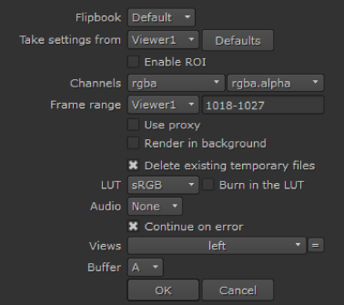

You can preview stereo images using the Viewer stereo modes or by flipbooking the sequence using Nuke's default flipbook.
The Viewer stereo modes allow you to see both views at once, in either anaglyph or interlaced per scanline. To enable of Viewer stereo mode, do the following:
| 1. | Right-click in the Viewer to display the context-sensitive menu. |
| 2. | Navigate to Stereo Modes and select the required mode: |
• Single - the default mode, shows only the view selected using the buttons above the Viewer.
• Anaglyph - produces a 3D effect when viewed with 2-color anaglyph glasses.
• Interlace - shows both views, but alternately per scanline.
|
|
|
| Anaglyph Stereo Mode | Interlaced Stereo Mode |
To flipbook stereo images, do the following:
| 1. | Select the node that you want to flipbook. |
| 2. | Select Render > Flipbook Selected from the main menu bar (or press Alt+F). |
You can also press the Flipbook this Viewer button at the bottom-right of the Viewer. This flipbooks the nodes that are connected to the Viewer.
A dialog opens.

| 3. | Check that your settings are correct in the dialog. The settings in the dialog are almost identical to the settings when you flipbook non-stereo sequences. For more information about these settings, see Flipbooking Sequences. |
| 4. | In the frame range field, enter the frame range you want to preview (for example, 1-35 or 1-8 10 12-15). |
| 5. | Using the View control, select the view you want to flipbook, either left or right. |
| 6. | Click OK. |
Nuke renders the selected view as a temporary sequence using the frame range and resolution defined in the script’s settings. This may take a few moments.
| 7. | After the render is complete, Nuke launches Flipbook Viewer and loads in the temporary sequence. |
You can play it back and view it using Flipbook Viewer controls.
|
|